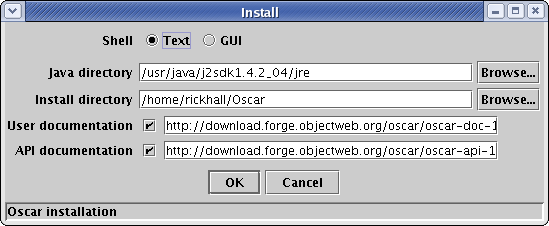

Everything needed to run Oscar is included in the release package except for Java. In order to run Oscar you must install a recent version of either the Java 2 Development Kit (JDK) or the Java 2 Runtime Environment (JRE). If you do not plan to do development, then it is not necessary to install the JDK, in that case the JRE is sufficient. Java is freely available from Sun Microsystems.
To install Oscar you only need to download the core Oscar release package, which will be named according to this pattern: oscar-<release-version>.jar. After downloading the core Oscar release package, use the java command to execute the JAR file, like this (the following command assumes that you are trying to install the 1.0.0 version of Oscar and that you have Java in your PATH):
java -jar oscar-1.0.0.jar
For the above command to work properly, make sure you enter the name of the Oscar release package that you downloaded in place of "oscar-1.0.0.jar" in the above example command. For Windows users, it is often the case that you can just double-click on the JAR file to execute it. Executing the Oscar release package invokes the installer GUI, which looks like this:

By default, everything will be installed when you click on the "OK" button. A text-based command shell is the default means of interacting with Oscar, but you can choose the GUI shell if you desire; the GUI shell has plugins for displaying installed bundles, accessing the command shell, and accessing the bundle repository. To make the GUI shell your default Oscar shell, click on the corresponding radio button.
In addition to selecting the shell, you can change Oscar's installation directory and which JVM it will use by editing the corresponding property. The default values should be reasonable if you are uncertain as to what these values should be. You may also choose to not install the user or API documentation by disabling the check box next to the corresponding property. If you have downloaded the documentation packages separately (perhaps because you are behind a firewall), then you may type the appropriate "file://" URL into the supplied text field to avoid downloading them again. For directory names, it is best to avoid using "space" characters, but they should work correctly. The install process automatically configures the start-up scripts; oscar.bat for Windows and oscar.sh for UNIX-based platforms.
After installation your Oscar installation directory will contain the following files and directories:
At this point, you are ready to start using Oscar. Please refer to the usage document for more details.
If you have comments or suggestions, feel free to contact me at heavy@ungoverned.org.
Richard S. Hall